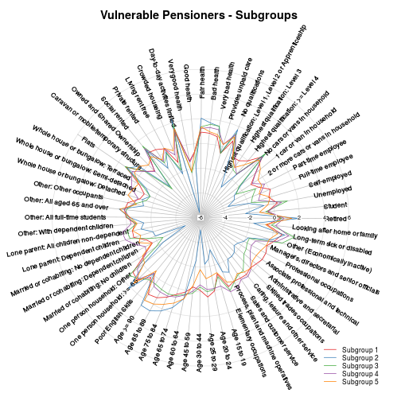

An Area Classification of Consumer Vulnerability in the UK
Posted on Sat 26 May 2018 in posts
title: "Consumer Vulnerability in the United Kingdom" output: html_notebook
Michael Adcock
\newline
Abstract
Consumer vulnerability has recently attracted increased media attention due to a number of high profle cases. While consumer vulnerability has been discussed at length for over a decade and guidelines have been produced, there has not been a comprehensive geographical assessment of consumer vulnerabil- ity in the United Kingdom. This work creates a geodemographic classifcation of consumer vulnerability at the geography of output area. This classifcation was achieved using a k-means approach. There were found to be six distinct clusters of varying levels of vulnerability. Two clusters in particular can be considered to contain high levels of vulnerable people, identifed as Vulner- able Communities and Vulnerable Pensioners. To aid interpretability of the results, pen portraits are provided for each cluster along with an interactive map showing cluster assignment for every output area in the United Kingdom. To further explore the characteristics of the clusters, sub-cluster were created by using the same k-means methods on each individual cluster dataset. Com- parison of these clusters and sub-clusters created with open source data to closed sourced data obtained from a commercial partner also helped to fur- ther explore the character of clusters. Comparison with a previous successful geodemographic classification shows improvement in cluster tightness.
A Definition of Consumer Vulnerability
There is general agreement in the current literature that consumer vulnerably is highly complex and may be influenced by many factors. As such a definition used for categorising vulnerability should reflect this while still providing a useful measure. A suitable way of defining vulnerability would therefore be using a multidimensional approach.
To take these factors into account and produce a definition of consumer vulnerability that can be measured for this study, the following definition is proposed:
Consumer vulnerability is the risk that a consumer's mental, physical or financial welfare may be damaged when engaging in a market interaction.
This definition can be measured using five dimensions (based on the EC report):
1.Risk of harm occurring to the consumer as a result of a negative transaction outcome.
2.The ability of the consumer to maximise their own well-being.
3.The ability of the consumer to access suitable information about products or services.
4.The ability of the consumer to access suitable products and services.
5.Susceptibility of the consumer to market practices.
When making use of these dimensions to measure vulnerability the following factors should be considered: individual characteristics (e.g. age, income), transient states of the consumer (e.g. illness), external conditions (e.g. prejudice) on the consumer, and market forces acting on the consumer.
These five dimensions can be used to construct a scale of vulnerability (e.g. 1 to 5) as related to the above definition. This scale does not give an absolute measure of vulnerability of the consumer in every interaction but rather the risk that the consumer may be vulnerable in a given interaction.
This definition and the five dimensions of vulnerability can be considered from the perspective of different markets (e.g. energy sector, financial sector and the gambling industry) which will change the vulnerability scores of customers in respect to these markets.
Methods
Libraries and functions requied for analysis
library(plyr)
library(RColorBrewer)
library(tidyverse)
library(rgdal)
library(parallel)
library(plotrix)
library(ggplot2)
library(reshape2)
library(sf)
# Subset OA data and calculate percentages using demominators
count_to_percentage <- function(input_df, variable_choices) {
tibble::as.tibble(input_df[variable_choices$VariableCode] /
input_df[variable_choices$StatisticalUnit] * 100)
}
ihs <- function(input_df) {
as.tibble(log(input_df + sqrt(input_df ^ 2 + 1)))
}
z_scores <- function(input_df) {
# Compute the column-wise means for all observations
mean_by_col <- apply(input_df, 2, mean)
# Compute the column-wise sample sd's for *all* observations
sd_by_col <- apply(input_df, 2, sd)
# Create the z-scores via the 'scale' function
zscores <-scale(input_df, center = mean_by_col, scale = sd_by_col)
as.tibble(zscores)
}
# Corrolation
cor_cutoff <- function(variable, cutoff) {
cor_mat[,variable][cor_mat[,variable] >= cutoff | cor_mat[,variable] <= -cutoff]
}
# Wrapper for kmeans
k_means <- function(k, input_data, n_start_input) {
set.seed(2494)
kmeans(input_data,
k, iter.max = 1000,
nstart = n_start_input,
algorithm = "Lloyd")}
k_comparison <- function(input_data, iter=1:15, n_start=25) {
# Set up parrallel processing for windows
cl <- makeCluster(detectCores() - 1)
clusterExport(cl=cl,
varlist=c("iter", "k_means", "input_data", "n_start"),
envir=environment())
system.time(
k_choice_clust_list <- parLapply(cl, iter, k_means, input_data, n_start)
)
stopCluster(cl)
return(k_choice_clust_list)
}
# Scree plot
scree <- function(k_choice_clust_list, iter, title) {
wss <- purrr::map(k_choice_clust_list, ~.$tot.withinss)
plot(iter, wss,
type = "o",
main = paste("Cluster Scree Plot: ", title),
xlab = "Number of Clusters",
ylab = "Within Cluster Sum of Squares")
min_clus <-purrr::map(k_choice_clust_list, ~min(.$size))
plot(iter, min_clus,
type = "h",
main = paste("Smallest Cluster Plot:", title),
xlab = "Number of Clusters",
ylab = "Smallest Cluster Size")
}
run_kmeans_comp_subgroup <- function(subgroup, data, num_pc) {
data %>%
filter(cluster==subgroup) %>%
select(1:num_pc) %>%
k_comparison(iter) %>%
scree(iter, paste("subgroup ", subgroup))
}
run_kmeans_subgroup <- function(subgroup, k, nstart) {
subgroup <- subgroup[1:ncol(subgroup)-1]
k_means(k, subgroup, nstart)
}
avg_z <- function(cluster_choice, sub_kmeans_obj, k_means_obj, cv_ihs_z) {
a <- as_tibble(cbind(cv_ihs_z, cluster=k_means_obj$cluster))
a <- filter(a, cluster==cluster_choice)[, -length(a)]
ddply(a, .(sub_kmeans_obj[[cluster_choice]]$cluster), numcolwise(mean))[, -1]
}
cluster_difference <- function(sub_cluster_zscores, cluster_zscores) {
cluster_zscores <- unlist(cluster_zscores)
sub_cluster_zscores - cluster_zscores[col(sub_cluster_zscores)] # -
}
rename_rows <- function(df, name) {
row.names(df) <- map(1:nrow(df), function(row, name) paste(name, ": Subgroup ", row, sep=""), name)
return(df)
}
create_heatmap <- function(mean_cluster_zscores, num_clusters, margins) {
# Create heatmap
colours <- rev(brewer.pal(10,'BrBG')) # reverse colours
break_nums <- c(-1e10,-2,-1.5,-1,-0.5,0,0.5,1,1.5,2,+1e10)
legend_names <- c("<-2","-2 to -1.5","-1.5 to -1","-1 to -0.5","-0.5 to 0","0 to 0.5","1 to 2","1.5 to 2","2 to 2.5",">2")
heatmap(t(mean_cluster_zscores),
scale = 'none',
col = colours,
breaks = break_nums, #3
cexRow = .5,
cexCol = .8,
mar=margins,
add.expr= abline(h = (0:length(mean_cluster_zscores)) + 0.5, v = (0:num_clusters) + 0.5, col = 'white'))
par(xpd=TRUE)
legend(title=expression(bold("z-score\n\n")), 0.22, -0.07, legend_names, title.adj=0.48, lty = 1, lwd = 20, col=colours, cex=0.7, bty = "n", horiz=TRUE, adj=c(0.5, -2), x.intersp=-1)
par(xpd=FALSE)
}
# produce radial plots
radial_plot <- function(data, main_title, min_max=c(-2,3), legend_names) {
print(main_title)
par(cex.axis=.7)
par(cex.lab=.6)
colours <- brewer.pal(8,'Set1')
p <- radial.plot(data, labels=names(data),
start=5,
clockwise=TRUE,
rp.type="p",
line.col=colours,
lwd=1,
point.col="black",
label.prop=0.91,
radlab=TRUE,
radial.lim = min_max,
grid.col = "#E0E0E0",
col.sub = "green",
mar=c(2, 0, 5, 0),
show.radial.grid=TRUE
)
title(paste(main_title, "\n\n"))
par(xpd=TRUE)
legend(9.5,-10,legend_names,lty=1,lwd=1,col=colours, cex=0.7, bty = "n")
par(xpd=FALSE)
}
cluster_tibble <- function(subgroup, kmeans_obj, cluster_name) {
tib <- tibble(subgroup$OA, kmeans_obj$cluster)
names(tib) <- c("OA_SA", cluster_name)
return(tib)
}
Acquisition of data
The raw data used for this study was the UK Census from 2011. The file from which this data is taken is the input data from Output Area Classification (OAC) 2011. This file includes all variables (167 in total) prior to variable selection for OAC. The geographical units used are output areas and the data is structured in the form of counts for each variable per output area (except in certain specified cases where rates are used). The dataset and lookup table was downloaded from http://geogale.github.io/2011OAC found in the "Input Data" section under the title "2011 OAC 167 Initial Variables Dataset".
Variable selection
The initial variable selection was made from the 167 variables found in the 2011 census data as described above. The selection was carried out using the definition of consumer vulnerably given above in this work (section 1.1.3). This was achieved by choosing variables from the pool of raw variables based on whether they describe one of the five dimensions of vulnerability. A .csv file was created containing the variable choices made on this basis, documenting the dimension of vulnerability to which each variable belonged.
Variables were pooled when they were found to be no more informative when considered separately, from a consumer vulnerability perspective, than they were when considered together. For example, for the purpose of consumer vulnerability, married people with children, are functionally the same as cohabiting people with children so these variables were pooled into a single variable. This step helped to improve final interpretability of the clusters.
# Load data
oa_data <- readr::read_csv("2011_OAC_Raw_uVariables.csv")
variable_choices <- readr::read_csv("K-means_version_5_variables.csv")
lookup_table <- readr::read_csv("2011_OAC_Raw_uVariables_Lookup.csv")
Data Treatment
Counts to Percentages
In order to use the selected data for clustering, counts were converted to percentages for each output area. In order to correctly find the percentage for each variable the correct denominator needed to be identified (e.g. total population, population over 16) for the percentage calculation. The denominator for each variable to correctly calculate the percentage was documented in the variable choice .csv file. In the cases of a variable describing a rate rather than a count, the rate measure was kept as is.
# Prepare raw data to pecentages
cv_pct_data <- oa_data %>%
tibble::add_column("Rate" = 100) %>% # Add a column of just 100's for use in percentage calcs below when already dealing with rates
count_to_percentage(variable_choices) %>% # Create percentages
base::replace(is.na(.), 0) %>% # Replace any nan's with 0's
dplyr::mutate(u062_u065 = u062 + u065) %>% # Combine married/cohabiting
dplyr::mutate(u063_u066 = u063 + u066) %>% # Combine married/cohabiting
dplyr::mutate(u064_u067 = u064 + u067) %>% # Combine married/cohabiting
dplyr::mutate(u049_u050 = u049 + u050) %>% # Combine english skills
dplyr::mutate(u127_u129 = u127 + u129) %>% # Comnine students
dplyr::mutate(u095_u096 = u095 + u096) %>% # combine occupancy rating
dplyr::select(-u062:-u067) %>% # Remove married/cohabiting
dplyr::select(-u047:-u050) %>% # Remove english skills
dplyr::select(-u127) %>% # remove students
dplyr::select(-u129) %>% # remove students
dplyr::select(-u095:-u099) # remove occupancy
cv_pct_data <- cv_pct_data[, order(names(cv_pct_data))] # sort colums by name # sort colums by name
# Make lookup maps
keys <- as.list(c(variable_choices$VariableCode,
c("OA",
"u062_u065",
"u063_u066",
"u064_u067",
"u049_u050",
"u127_u129",
"u095_u096"
)))
values <- as.list(c(variable_choices$VariableLabel,
c("Output Area", "Married or cohabiting: No children",
"Married or cohabiting: Dependent children",
"Married or cohabiting: No dependent children",
"Poor English Skils",
"Student",
"Crowded houseing"
)))
lookup_map <- list2env(setNames(values, keys), envir = new.env(hash = TRUE))
rev_lookup_map <- list2env(setNames(keys, values), envir = new.env(hash = TRUE))
Transformation
Exploratory analysis of the data showed that there was a range of different distributions represented by the final variable choices. This was apparent through plotting histograms of each variable. A range of differing distributions creates a problem when using k-means as the algorithm is optimised to find spherical clusters and as such the optimal distribution for a successful k-means classification is the Gaussian distribution for input variables. In order to address this problem a transformation stage was performed. The transformation used was Inverse Hyperbolic Sine (IHS) which reduces the variance in variable distributions through increasing distance between small values and compressing distance between large values. An advantage of IHS is that unlike some other transformations it may also be used for zero or negative values.
# Transformation (IHS)
cv_ihs <- ihs(cv_pct_data)
Standardisation
In addition, the scale for the data was standardised. The method used in this work was the z-score which is a calculation of the number of standard deviations away from the variable mean a value is. Standardising the variable in this way is essential for effective k-means clustering as it prevents variables with larger scale ranges from being more influential and is standard practice when perfoming k-means.
# Standardisation (Z-score)
cv_ihs_z <- z_scores(cv_ihs)
# rename variables to give full names
names(cv_ihs_z) <- purrr::map_chr(names(cv_ihs_z), function(x) lookup_map[[x]])
Corrolation
Reducing the number of variables for consumer vulnerability clustering from the initial selection was an iterative process. This was performed by investigating the correlation of variables after treatment of the data for clustering (section 2.3). Highly correlated variables (Pearson coefficient > 0.6) were considered for removal from the selection. However the final decision on whether a variable was kept or discarded was also based on interpretability of the final results rather than solely based on a coefficient cut-off.
# Corrolation-------------------------------------------------------------------------
cor_mat <- cor(cv_ihs_z)
high_cor <- purrr::map(colnames(cor_mat), cor_cutoff, 0.6)
high_cor[purrr::map_lgl(high_cor, ~length(.) > 1)]
## [[1]]
## Age 25 to 29 Retired
## 1.0000000 -0.6009528
##
## [[2]]
## Age 60 to 64 Age 65 to 74 Retired
## 1.0000000 0.6762770 0.7483487
##
## [[3]]
## Age 60 to 64 Age 65 to 74
## 0.6762770 1.0000000
## Age 75 to 84 One person household: >= 65
## 0.7133097 0.7038382
## Retired
## 0.9303259
##
## [[4]]
## Age 65 to 74 Age 75 to 84
## 0.7133097 1.0000000
## Age 85 to 89 One person household: >= 65
## 0.6354057 0.7741075
## Retired
## 0.7283789
##
## [[5]]
## Age 75 to 84 Age 85 to 89
## 0.6354057 1.0000000
## Age >= 90 One person household: >= 65
## 0.6078266 0.6151039
##
## [[6]]
## Age 85 to 89 Age >= 90
## 0.6078266 1.0000000
##
## [[7]]
## Age 65 to 74 Age 75 to 84
## 0.7038382 0.7741075
## Age 85 to 89 One person household: >= 65
## 0.6151039 1.0000000
## Retired
## 0.6898363
##
## [[8]]
## One person household: Other Flats
## 1.0000000 0.6199775
##
## [[9]]
## Married or cohabiting: Dependent children
## 1.0000000
## Very good health
## 0.6126617
##
## [[10]]
## Whole house or bungalow: Detached Crowded houseing
## 1.0000000 0.6224693
## No cars or vans in household 2 or more cars or vans in household
## -0.7170235 0.7199298
##
## [[11]]
## One person household: Other Flats
## 0.6199775 1.0000000
## Crowded houseing 2 or more cars or vans in household
## -0.6470808 -0.6091593
##
## [[12]]
## Owned and Shared Ownership Social rented
## 1.0000000 -0.6408435
## Crowded houseing No cars or vans in household
## 0.7169065 -0.6162756
## 2 or more cars or vans in household
## 0.7515816
##
## [[13]]
## Owned and Shared Ownership Social rented
## -0.6408435 1.0000000
## No cars or vans in household Long-term sick or disabled
## 0.6378717 0.6232023
##
## [[14]]
## Whole house or bungalow: Detached Flats
## 0.6224693 -0.6470808
## Owned and Shared Ownership Crowded houseing
## 0.7169065 1.0000000
## No cars or vans in household 2 or more cars or vans in household
## -0.6324442 0.7583832
##
## [[15]]
## Day-to-day activities limited Very good health
## 1.0000000 -0.7366968
## Fair health Bad health
## 0.8021976 0.7570691
## No qualifications Long-term sick or disabled
## 0.7671245 0.6338326
##
## [[16]]
## Married or cohabiting: Dependent children
## 0.6126617
## Day-to-day activities limited
## -0.7366968
## Very good health
## 1.0000000
## Fair health
## -0.6484393
##
## [[17]]
## Day-to-day activities limited Very good health
## 0.8021976 -0.6484393
## Fair health Bad health
## 1.0000000 0.6383888
## No qualifications
## 0.7664267
##
## [[18]]
## Day-to-day activities limited Fair health
## 0.7570691 0.6383888
## Bad health No qualifications
## 1.0000000 0.7009737
## Long-term sick or disabled
## 0.6951246
##
## [[19]]
## Day-to-day activities limited Fair health
## 0.7671245 0.7664267
## Bad health No qualifications
## 0.7009737 1.0000000
## Highest qualification: >= Level 4 Long-term sick or disabled
## -0.7631472 0.6253844
## Professional occupations
## -0.6740730
##
## [[20]]
## No qualifications
## -0.7631472
## Highest qualification: >= Level 4
## 1.0000000
## Long-term sick or disabled
## -0.6066099
## Managers, directors and senior officials
## 0.6315341
## Professional occupations
## 0.8643247
## Associate professional and technical
## 0.6642001
##
## [[21]]
## Whole house or bungalow: Detached Owned and Shared Ownership
## -0.7170235 -0.6162756
## Social rented Crowded houseing
## 0.6378717 -0.6324442
## No cars or vans in household 2 or more cars or vans in household
## 1.0000000 -0.7995621
##
## [[22]]
## Whole house or bungalow: Detached Flats
## 0.7199298 -0.6091593
## Owned and Shared Ownership Crowded houseing
## 0.7515816 0.7583832
## No cars or vans in household 2 or more cars or vans in household
## -0.7995621 1.0000000
##
## [[23]]
## Self-employed
## 1.0000000
## Managers, directors and senior officials
## 0.6226272
##
## [[24]]
## Age 25 to 29 Age 60 to 64
## -0.6009528 0.7483487
## Age 65 to 74 Age 75 to 84
## 0.9303259 0.7283789
## One person household: >= 65 Retired
## 0.6898363 1.0000000
##
## [[25]]
## Social rented Day-to-day activities limited
## 0.6232023 0.6338326
## Bad health No qualifications
## 0.6951246 0.6253844
## Highest qualification: >= Level 4 Long-term sick or disabled
## -0.6066099 1.0000000
##
## [[26]]
## Highest qualification: >= Level 4
## 0.6315341
## Self-employed
## 0.6226272
## Managers, directors and senior officials
## 1.0000000
##
## [[27]]
## No qualifications Highest qualification: >= Level 4
## -0.6740730 0.8643247
## Professional occupations Associate professional and technical
## 1.0000000 0.6324629
##
## [[28]]
## Highest qualification: >= Level 4 Professional occupations
## 0.6642001 0.6324629
## Associate professional and technical
## 1.0000000
Principal Component Analysis
After selecting the variables for clustering and performing data transformation, there were still variables that were highly correlated which were kept as they increased the interpretability of the final clusters. There were also a reasonably large number of variables remaining despite the original cluster choices being largely cut down. To help address these issues, principal component analysis (PCA) was performed on the treated dataset before clustering.
PCA is a dimensionality reduction technique which uses orthogonal transformation to convert potentially correlated variables into linearly uncorrelated principal components. It is frequently used alongside k-means to lower the dimensionally of data while retaining as much variation as possible before clustering. This helps to avoid the "curse of dimensionality" sometimes experienced when clustering data. When PCA is performed before k-means the user must decide how many principal components will be used as input for the clustering step. This was achieved by looking at the variance explained by each principal component and the cumulative variance. An elbow plot was used to help to make this decision.
# Perfom principle component analysis
pca_obj <- stats::princomp(cv_ihs_z, scores = T)
We can look at variation each componet explains.
# Look at variation each componet explains
pca_obj$sdev^2/sum(pca_obj$sdev^2)
## Comp.1 Comp.2 Comp.3 Comp.4 Comp.5
## 0.1975901584 0.1670138959 0.0978362094 0.0459346094 0.0359967077
## Comp.6 Comp.7 Comp.8 Comp.9 Comp.10
## 0.0311052455 0.0239476712 0.0202571869 0.0182858240 0.0179127696
## Comp.11 Comp.12 Comp.13 Comp.14 Comp.15
## 0.0147648013 0.0144446687 0.0142151210 0.0134479015 0.0120634714
## Comp.16 Comp.17 Comp.18 Comp.19 Comp.20
## 0.0118792615 0.0108562192 0.0106571552 0.0102412626 0.0098802908
## Comp.21 Comp.22 Comp.23 Comp.24 Comp.25
## 0.0094481845 0.0092024290 0.0091019221 0.0089562946 0.0085281870
## Comp.26 Comp.27 Comp.28 Comp.29 Comp.30
## 0.0080004497 0.0079004968 0.0078697059 0.0075594576 0.0072820050
## Comp.31 Comp.32 Comp.33 Comp.34 Comp.35
## 0.0070081112 0.0068511666 0.0066095603 0.0065055815 0.0062275930
## Comp.36 Comp.37 Comp.38 Comp.39 Comp.40
## 0.0061569703 0.0060947324 0.0059531902 0.0058181003 0.0055392923
## Comp.41 Comp.42 Comp.43 Comp.44 Comp.45
## 0.0052262950 0.0051758398 0.0049676091 0.0047944031 0.0045788334
## Comp.46 Comp.47 Comp.48 Comp.49 Comp.50
## 0.0045017607 0.0040835960 0.0040337823 0.0039130858 0.0035591423
## Comp.51 Comp.52 Comp.53 Comp.54 Comp.55
## 0.0033986543 0.0033036418 0.0030551303 0.0029511841 0.0025320804
## Comp.56 Comp.57 Comp.58 Comp.59 Comp.60
## 0.0024629900 0.0023318607 0.0021472566 0.0017952480 0.0017312859
## Comp.61 Comp.62 Comp.63 Comp.64
## 0.0014692103 0.0012910101 0.0010081484 0.0007440902
plot(pca_obj$sdev^2/sum(pca_obj$sdev^2),
#main="Variance explained by priciple components",
xlab="Principal components",
ylab="Variance",
type = "o")

We can also look at the cumulative variation.
# Look at cumulative variation
cumsum(pca_obj$sdev^2/sum(pca_obj$sdev^2))
## Comp.1 Comp.2 Comp.3 Comp.4 Comp.5 Comp.6 Comp.7
## 0.1975902 0.3646041 0.4624403 0.5083749 0.5443716 0.5754768 0.5994245
## Comp.8 Comp.9 Comp.10 Comp.11 Comp.12 Comp.13 Comp.14
## 0.6196817 0.6379675 0.6558803 0.6706451 0.6850897 0.6993049 0.7127528
## Comp.15 Comp.16 Comp.17 Comp.18 Comp.19 Comp.20 Comp.21
## 0.7248162 0.7366955 0.7475517 0.7582089 0.7684501 0.7783304 0.7877786
## Comp.22 Comp.23 Comp.24 Comp.25 Comp.26 Comp.27 Comp.28
## 0.7969810 0.8060830 0.8150393 0.8235674 0.8315679 0.8394684 0.8473381
## Comp.29 Comp.30 Comp.31 Comp.32 Comp.33 Comp.34 Comp.35
## 0.8548976 0.8621796 0.8691877 0.8760388 0.8826484 0.8891540 0.8953816
## Comp.36 Comp.37 Comp.38 Comp.39 Comp.40 Comp.41 Comp.42
## 0.9015385 0.9076333 0.9135865 0.9194046 0.9249439 0.9301702 0.9353460
## Comp.43 Comp.44 Comp.45 Comp.46 Comp.47 Comp.48 Comp.49
## 0.9403136 0.9451080 0.9496868 0.9541886 0.9582722 0.9623060 0.9662191
## Comp.50 Comp.51 Comp.52 Comp.53 Comp.54 Comp.55 Comp.56
## 0.9697782 0.9731769 0.9764805 0.9795356 0.9824868 0.9850189 0.9874819
## Comp.57 Comp.58 Comp.59 Comp.60 Comp.61 Comp.62 Comp.63
## 0.9898138 0.9919610 0.9937563 0.9954875 0.9969568 0.9982478 0.9992559
## Comp.64
## 1.0000000
plot(cumsum(pca_obj$sdev^2/sum(pca_obj$sdev^2)),
#main="Cumulative variance explained by priciple components",
xlab="Principal Components",
ylab="Cumulative Variance",
type = "o")

When IHS transformation is used the first 25 priciple explains 81% of variation
# When IHS transformation is used the first 25 priciple explains 81% of variation
num_pc <- 10
The principal component loadings were examined to fin how prepresent each variable was by the first 10 principal components. In order explore this the loadings for the first 10 principal components were summed. The lowest represented variable was for the household variable "Other: All aged 65 and over". To contrast with this, the age bands exceeding 65 were quite highly represented. Examining the correlation of "Other: All aged 65 and over" with these variables, the Pearson coefficient was 0.70 for "Age 65 to 70", 0.77 for "Age 75 to 84" and 0.62 for "Age 85 to 89". In addition there is a high correlation with the "Retired" variable at a Pearson coefficient of 0.69. These findings are not surprising but do help to explain the lower representation of the "Other: All aged 65 and over" variable and gives confidence that it is not a concern. Overall there is a good representation of all variables within the principal component loadings that were used for clustering input.
#Loadings
load <- with(pca_obj, unclass(loadings))
loadings <- sweep(abs(load), 2, colSums(abs(load)), "/")
par(mar=c(15, 5,1,1))
barplot(rowSums(abs(load[,1:num_pc])), las=2, cex.names = 0.6, #main = "Sum of Loadings for Principal components 1 to 10",
ylab = "Sum of Principal Componet Loadings", border = "blue")

K-means Clustering
K-means is an iterative algorithm which finds clusters in data based on the centroids of clusters. Centroid position is random for initial step and subsequently updated at each iteration based on the previous cluster assignments . The initial cluster centroids are randomly selected and the number of clusters (k) must be chosen by the user.
K-means was performed using principal components generated from the PCA step as input. The optimum number of clusters was first determined by running k-means at each value of k from 2 to 25. Scree plots and smallest cluster plots from the results were then created. A scree or elbow plot shows the within cluster sum of squares for each cluster number when running k-means. The aim of such a plot is to show where the elbow is, suggesting an appropriate number of clusters, as there are diminishing returns after this point. A smallest cluster plot shows the size of the smallest cluster size when k-means is run for each number of clusters. This allows us to see at which point we start the get very small clusters, which is undesirable.
As the initialisation of centroids for k-means clustering was random, clustering was repeated for each value of k 25 times with different random centroid placement. From these 25 runs the result with the lowest total within sum of squares were chosen for the result. Once an appropriate number of clusters was chosen, k-means was run again on the dataset 100 times at the selected number for k and the solution with the lowest within sum of squares was selected.
iter = 1:25
k_choice_clust_list <- k_comparison(pca_obj$scores[, 1:num_pc], iter, 25)
scree(k_choice_clust_list, iter, "All data")


# Small clusters start after a k of ? and elbow plot shows decreasing WSS at around ?
num_clusters <- 6
nstart=100
set.seed(2494)
system.time(
k_means_obj <- k_means(num_clusters, pca_obj$scores[, 1:num_pc], nstart)
)
## user system elapsed
## 856.426 0.000 860.510
cluster_names <- c("Students and Young Professionals", "On a Budget", "Prosperous Professionals",
"Well Established", "Vulnerable Communities", "Vulnerable Pensioners")
To aid interpretation we can view how each cluster realtes to each variable (rather than principal components)
# Compute a data frame (one row per cluster) containing the means of each variable in that cluster
cluster_zscores <- plyr::ddply(cv_ihs_z, .(k_means_obj$cluster), numcolwise(mean))[, -1]
row.names(cluster_zscores) <- cluster_names
Sub-clusters
In order to explore the clusters further, k-means clustering was applied to each cluster separately to create sub-clusters. For each cluster dataset the appropriate number for k was determined using the same method as when k-means was used on the whole data. To create the sub-clusters the k-means algorithm was run on each cluster data-set 100 times at the chosen number for k and the solution with the lowest within sum of squares was selected.
### same steps for Sub groups
cluster_selection <- tibble::as_tibble(cbind(pca_obj$scores[, 1:num_pc], cluster=k_means_obj$cluster, OA=oa_data$OA))
map(1:num_clusters, run_kmeans_comp_subgroup, cluster_selection, num_pc)


## [[1]]
## NULL
##
## [[2]]
## NULL
##
## [[3]]
## NULL
##
## [[4]]
## NULL
##
## [[5]]
## NULL
##
## [[6]]
## NULL
Again aid interpretation in the sub-clusters we can view how each cluster realtes to each variable . The sub-group z-score are assesed both as is (global mean comparision) and in realtion to their parent group (difference in z-score).
sub_k <- c(4, 5, 5, 4, 8, 5)
sub_groups <- map(1:num_clusters, function(subgroup, data) dplyr::filter(data, cluster==subgroup), cluster_selection)
sub_groups_kmeans <- purrr::map2(sub_groups, sub_k, run_kmeans_subgroup, nstart)
sub_cluster_zscores <- purrr::map(1:num_clusters, avg_z, sub_groups_kmeans, k_means_obj, cv_ihs_z)
cluster_z_diff <- purrr::map(1:length(sub_cluster_zscores),
function(x) cluster_difference(sub_cluster_zscores[[x]], cluster_zscores[x,]))
Radial Plots
Groups
Radial plots were produced for each cluster showing the z-scores for each variable. These show the strength of each characteristic in each cluster.
# groups to global
purrr::map(1:nrow(cluster_zscores),
function(cluster_z_diff, x) radial_plot(cluster_zscores[x,], cluster_names[x], min_max=c(-3,3), "Group to global \n mean z-score\n"))
## [1] "Students and Young Professionals" "On a Budget"
## [3] "Prosperous Professionals" "Well Established"
## [5] "Vulnerable Communities" "Vulnerable Pensioners"
## [1] "Students and Young Professionals" "On a Budget"
## [3] "Prosperous Professionals" "Well Established"
## [5] "Vulnerable Communities" "Vulnerable Pensioners"

## [1] "Students and Young Professionals" "On a Budget"
## [3] "Prosperous Professionals" "Well Established"
## [5] "Vulnerable Communities" "Vulnerable Pensioners"
## [1] "Students and Young Professionals" "On a Budget"
## [3] "Prosperous Professionals" "Well Established"
## [5] "Vulnerable Communities" "Vulnerable Pensioners"
## [1] "Students and Young Professionals" "On a Budget"
## [3] "Prosperous Professionals" "Well Established"
## [5] "Vulnerable Communities" "Vulnerable Pensioners"
## [1] "Students and Young Professionals" "On a Budget"
## [3] "Prosperous Professionals" "Well Established"
## [5] "Vulnerable Communities" "Vulnerable Pensioners"

## [[1]]
## [[1]]$xpd
## [1] TRUE
##
##
## [[2]]
## [[2]]$xpd
## [1] TRUE
##
##
## [[3]]
## [[3]]$xpd
## [1] TRUE
##
##
## [[4]]
## [[4]]$xpd
## [1] TRUE
##
##
## [[5]]
## [[5]]$xpd
## [1] TRUE
##
##
## [[6]]
## [[6]]$xpd
## [1] TRUE
Sub-groups
Radial plots were produced for each cluster showing the z-scores for each variable compared to the gloab mean (red) and to the parent group mean (blue).
# sub to global and sub to group diff (red line is global, blue line is difference between group and subgroup)
purrr::pmap(list(sub_cluster_zscores, cluster_z_diff, cluster_names),
function(global, diff, name) purrr::map(1:nrow(global),
function(i, global, diff, name) radial_plot(rbind(global[i,], diff[i,]), paste(name, "- Sub-group", i), min_max=c(-6,6), c("Subgroup to global \n mean z-score\n", "Subgroup to group \n mean z-score\n")),
global, diff, name))
## [1] "Students and Young Professionals - Sub-group 1"

## [1] "Students and Young Professionals - Sub-group 2"

## [1] "Students and Young Professionals - Sub-group 3"

## [1] "Students and Young Professionals - Sub-group 4"

## [1] "On a Budget - Sub-group 1"

## [1] "On a Budget - Sub-group 2"

## [1] "On a Budget - Sub-group 3"

## [1] "On a Budget - Sub-group 4"

## [1] "On a Budget - Sub-group 5"

## [1] "Prosperous Professionals - Sub-group 1"

## [1] "Prosperous Professionals - Sub-group 2"

## [1] "Prosperous Professionals - Sub-group 3"

## [1] "Prosperous Professionals - Sub-group 4"

## [1] "Prosperous Professionals - Sub-group 5"

## [1] "Well Established - Sub-group 1"

## [1] "Well Established - Sub-group 2"

## [1] "Well Established - Sub-group 3"

## [1] "Well Established - Sub-group 4"

## [1] "Vulnerable Communities - Sub-group 1"

## [1] "Vulnerable Communities - Sub-group 2"

## [1] "Vulnerable Communities - Sub-group 3"

## [1] "Vulnerable Communities - Sub-group 4"

## [1] "Vulnerable Communities - Sub-group 5"

## [1] "Vulnerable Communities - Sub-group 6"

## [1] "Vulnerable Communities - Sub-group 7"

## [1] "Vulnerable Communities - Sub-group 8"

## [1] "Vulnerable Pensioners - Sub-group 1"

## [1] "Vulnerable Pensioners - Sub-group 2"

## [1] "Vulnerable Pensioners - Sub-group 3"

## [1] "Vulnerable Pensioners - Sub-group 4"

## [1] "Vulnerable Pensioners - Sub-group 5"

## [[1]]
## [[1]][[1]]
## [[1]][[1]]$xpd
## [1] TRUE
##
##
## [[1]][[2]]
## [[1]][[2]]$xpd
## [1] TRUE
##
##
## [[1]][[3]]
## [[1]][[3]]$xpd
## [1] TRUE
##
##
## [[1]][[4]]
## [[1]][[4]]$xpd
## [1] TRUE
##
##
##
## [[2]]
## [[2]][[1]]
## [[2]][[1]]$xpd
## [1] TRUE
##
##
## [[2]][[2]]
## [[2]][[2]]$xpd
## [1] TRUE
##
##
## [[2]][[3]]
## [[2]][[3]]$xpd
## [1] TRUE
##
##
## [[2]][[4]]
## [[2]][[4]]$xpd
## [1] TRUE
##
##
## [[2]][[5]]
## [[2]][[5]]$xpd
## [1] TRUE
##
##
##
## [[3]]
## [[3]][[1]]
## [[3]][[1]]$xpd
## [1] TRUE
##
##
## [[3]][[2]]
## [[3]][[2]]$xpd
## [1] TRUE
##
##
## [[3]][[3]]
## [[3]][[3]]$xpd
## [1] TRUE
##
##
## [[3]][[4]]
## [[3]][[4]]$xpd
## [1] TRUE
##
##
## [[3]][[5]]
## [[3]][[5]]$xpd
## [1] TRUE
##
##
##
## [[4]]
## [[4]][[1]]
## [[4]][[1]]$xpd
## [1] TRUE
##
##
## [[4]][[2]]
## [[4]][[2]]$xpd
## [1] TRUE
##
##
## [[4]][[3]]
## [[4]][[3]]$xpd
## [1] TRUE
##
##
## [[4]][[4]]
## [[4]][[4]]$xpd
## [1] TRUE
##
##
##
## [[5]]
## [[5]][[1]]
## [[5]][[1]]$xpd
## [1] TRUE
##
##
## [[5]][[2]]
## [[5]][[2]]$xpd
## [1] TRUE
##
##
## [[5]][[3]]
## [[5]][[3]]$xpd
## [1] TRUE
##
##
## [[5]][[4]]
## [[5]][[4]]$xpd
## [1] TRUE
##
##
## [[5]][[5]]
## [[5]][[5]]$xpd
## [1] TRUE
##
##
## [[5]][[6]]
## [[5]][[6]]$xpd
## [1] TRUE
##
##
## [[5]][[7]]
## [[5]][[7]]$xpd
## [1] TRUE
##
##
## [[5]][[8]]
## [[5]][[8]]$xpd
## [1] TRUE
##
##
##
## [[6]]
## [[6]][[1]]
## [[6]][[1]]$xpd
## [1] TRUE
##
##
## [[6]][[2]]
## [[6]][[2]]$xpd
## [1] TRUE
##
##
## [[6]][[3]]
## [[6]][[3]]$xpd
## [1] TRUE
##
##
## [[6]][[4]]
## [[6]][[4]]$xpd
## [1] TRUE
##
##
## [[6]][[5]]
## [[6]][[5]]$xpd
## [1] TRUE
In addition we can view all subgroups from each parant group an one plot to compare subgroups to each other. These radial plots show the subgroup z-scores compared to the global mean.
# all subgroups to global means
purrr::map(1:length(sub_cluster_zscores),
function(x) radial_plot(sub_cluster_zscores[[x]], paste(cluster_names[x], "- Subgroups"), min_max=c(-6,6), purrr::map(1:nrow(sub_cluster_zscores[[x]]),
function(x) paste("Subgroup", x))))
## [1] "Students and Young Professionals - Subgroups"

## [1] "On a Budget - Subgroups"

## [1] "Prosperous Professionals - Subgroups"

## [1] "Well Established - Subgroups"

## [1] "Vulnerable Communities - Subgroups"

## [1] "Vulnerable Pensioners - Subgroups"

## [[1]]
## [[1]]$xpd
## [1] TRUE
##
##
## [[2]]
## [[2]]$xpd
## [1] TRUE
##
##
## [[3]]
## [[3]]$xpd
## [1] TRUE
##
##
## [[4]]
## [[4]]$xpd
## [1] TRUE
##
##
## [[5]]
## [[5]]$xpd
## [1] TRUE
##
##
## [[6]]
## [[6]]$xpd
## [1] TRUE
Group Heatmap
A heatmap was produced showing the z-scores for each variable in each cluster in a single figure. The dendogram produced with the heatmap by hierarchical clustering of the six clusters grouped "Vulnerable Pensioners" and "Vulnerable Communities" with similarities in education, vehicle ownership, and employment and housing variables. The "Well Established", "Prosperous Professional" and "On a Budget" clusters were also grouped together with similarities in housing, vehicle and living arrangement variables. The "Students and Young Professionals" were not very strongly grouped with any other clusters but closer to "Well Established", "Prosperous Professional" and "On a Budget" clusters than "Vulnerable Pensioners" and "Vulnerable Communities".
# groups heatmap
sub_cluster_zscores <- map2(sub_cluster_zscores, cluster_names, rename_rows)
#pdf("figures\\group_heatmap.pdf", width = 250, height=350)
create_heatmap(cluster_zscores, 6, c(16,7))

Sub-group Heatmap
To further explore the character of the clusters, k-means was run on each cluster to produce sub-clusters. The number of sub-clusters chosen for each cluster were 5 sub-clusters for "Prosperous Professionals", 4 for "Well-Established", 4 for "Students ans Young Professionals", 5 for "On a Budget", 8 for "Vulnerable Communities" and 5 for "Vulnerable Pensioners". These sub-clusters were then displayed using a heatmap complete with dendogram showing the clustering of sub-clusters using hierarchical clustering with Euclidean distance. The hierarchical clustering revealed that many of the sub groups from the same parent group clustered together as in the case of the "Students and Young Professionals" sub-groups which all clusters together. However some subgroups from different parents groups clustered more closely with each other than with other subgroups from their own parents group. An example of this is "Vulnerable Pensioners: Sub-group 5", "Well Established: Subgroup 3" and "On a Budget: Subgroup 3" which clustered together with similarities in age structure and population employment domains.
# subgroups heatmap
create_heatmap(rbind(sub_cluster_zscores[[1]], sub_cluster_zscores[[2]], sub_cluster_zscores[[3]], sub_cluster_zscores[[4]], sub_cluster_zscores[[5]], sub_cluster_zscores[[6]])
, 31, c(20,7))